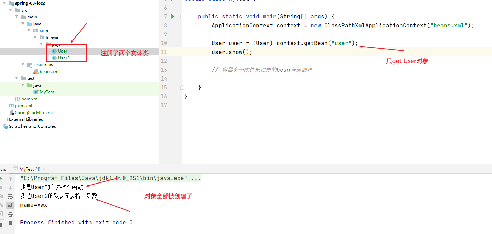

Spring简介
简单介绍
◆目的：解决企业应用开发的复杂性
◆功能：使用基本的JavaBean代替EJB，并提供了更多的企业应用功能
◆范围：任何Java应用
Spring是一个轻量级控制反转(IoC)和面向切面(AOP)的容器框架。
- 2002年，Rod Jahnson（音乐学博士）出版的《Expert One-on-One J2EE Design and Development》，第一次出现了Spring的一些核心思想，雏形框架：interface21框架
- 2004年3月24日，Spring框架以interface21框架为基础，经过重新设计，发布了1.0正式版
- Spring理念：使现有的技术更加容易使用，本身是一个大杂烩，整合了现有的技术框架
官网：https://spring.io/projects/spring-framework
官方下载地址：https://repo.spring.io/release/org/springframework/spring/
中文文档：https://www.docs4dev.com/docs/zh/spring-framework/5.1.3.RELEASE/reference
GitHub:https://github.com/spring-projects/spring-framework
Maven:
1 | <!-- 一般来说，第一个够用了 --> |
优点
- 一个开源的免费的框架
- 轻量级、非入侵式（集成了Spring之后不会影响原有的项目）的框架
- 控制反转（IOC）、面向切面编程（AOP）
- 支持事务的处理，对框架整合的支持
==Spring是一个轻量级的控制反转（IOC）和面向切面编程(AOP)的框架==
组成

拓展
现代化的java开发
- Spring Boot
- 一个快速开发的脚手架
- 基于Spring Boot可以快速开发单个微服务
- 约定大于配置
- Spring Cloud
- Spring Cloud是基于Spring Boot实现的
==多数人都在用，Spring和SpringMVC是最最基础的==
弊端：发展了太久之后，违背了原来的理念！配置十分繁琐
IOC理论
比如说，Class A中用到了Class B的对象b，一般情况下，需要在A的代码中显式的new一个B的对象。
采用依赖注入技术之后，A的代码只需要定义一个私有的B对象，不需要直接new来获得这个对象，而是通过相关的容器控制程序来将B对象在外部new出来并注入到A类里的引用中。
IOC，我不要去创建了，别人创建好了，我直接拿来用
控制反转：要实现不同的操作，只需要在xml配置文件中修改，对象让Spring来创建，管理，装配
IOC思想的简单解释
传统方法：
- User接口
- User实现类
- UserService接口
- UserService实现类
- 用户调用UserService实现类
上面的方法需要根据用户需求修改源代码，程序员自己去new对象
革命性变化：让用户选择实现哪个类
1 | // 利用set接口进行动态实现值得注入 |
1 | public static void main(String[] args) { |
- 使用set注入之后，让用户自己创建对象
让用户自己去new自己想要的对象，用户选择自己需要的接口

==本来程序员控制怎么new对象，现在换成用户自己new对象==
降低程序耦合性，程序员只需要专注业务实现即可
上面就是IOC的思想！！！
IOC

IOC创建对象的方式
使用无参构造创建对象，默认（但是一般满足不了需求，比如一个类有多个属性）
1
2
3<bean id="user" class="com.tcmyxc.pojo.User">
<property name="name" value="徐文祥"/>
</bean>假如要使用有参构造创建对象
- 下标赋值
1
2
3<bean id="user" class="com.tcmyxc.pojo.User">
<constructor-arg index="0" value="xwx"/>
</bean>- 参数类型匹配（不建议用）
1
2
3<bean id="user" class="com.tcmyxc.pojo.User">
<constructor-arg type="java.lang.String" value="xwx"/>
</bean>- 使用参数名（建议使用）
1
2
3<bean id="user" class="com.tcmyxc.pojo.User">
<constructor-arg name="name" value="xwx"/>
</bean>
自己写Spring的步骤：
- 创建一个java bean
- 在配置文件注册bean
- 从配置文件获取容器
- 从容器中拿对象
IOC创建对象一次性把注册的bean的对象全部创建，并且只创建一次

Spring配置
别名
1 | <!--别名--> |
bean的配置
1 | <!-- |
import
团队开发使用，合并配置文件用的
1 | <import resource="beans.xml"/> |
依赖注入（Dependency Injection）
依赖注入是IOC的实现
原始博客：https://martinfowler.com/articles/injection.html#InversionOfControl
- 原始的文章（马丁富勒）提出了三种方法：构造函数注入，Setter注入和接口注入
- Spring实现了两种，set注入和构造函数，官方和马丁福勒都提倡构造，但是大家一般喜欢set
本质是set注入，必须有set方法，如果真的没有setf方法，那就只能通过构造函数来注入
依赖：bean 对象的创建依赖于容器
注入：bean 对象中的所有属性，由容器来注入
可以混合使用基于构造函数的DI和基于设定值的DI
将构造函数用于强制性依赖项并将setter方法或配置方法用于可选依赖性是一个很好的经验法则。
可以 在setter方法上使用@Required批注，以使该属性成为必需的依赖项。但是，最好使用带有参数的程序验证的构造函数注入。
Spring团队通常提倡构造函数注入，因为它可以让您将应用程序组件实现为不可变对象，并确保不存在必需的依赖项
null构造函数注入的组件始终以完全初始化的状态返回到客户端（调用）代码
Setter注入主要应用于可以在类中分配合理的默认值的可选依赖项。否则，必须在代码使用依赖项的任何地方执行非空检查。setter注入的一个好处是，setter方法可使该类的对象在以后重新配置或重新注入
如果第三方类未公开任何setter方法，则构造函数注入可能是DI的唯一可用形式。
【环境搭建】
1、复杂类型
2、真实测试对象
构造器注入
第三大点已经说过
Set方式注入【重点】
1 | <bean id="address" class="com.tcmyxc.pojo.Address"> |
拓展方式
p 命名空间和 c 命名空间
- the p-namespace lets you use the
beanelement’s attributes (instead of nested<property/>elements) to describe your property values collaborating beans, or both. - the c-namespace, introduced in Spring 3.1, allows inlined attributes for configuring the constructor arguments rather then nested
constructor-argelements.
1 |
|
测试：
1 |
|
【注意点】
- 需要导入约束
- P命名空间必须有无参构造
- C命名空间必须有有参构造
作用域

单例
默认的
1 | <bean id="user2" class="com.tcmyxc.pojo.User" c:name="徐文祥" c:age="24"/> |
原型模式
每次从容器中get对象，都会创建一个新的出来
1 | <bean id="user" class="com.tcmyxc.pojo.User" p:name="xwx" p:age="24" scope="prototype"/> |
测试：
1 | // 测试作用域：单例以及原型 |

其他
只能在web开发中使用
Bean的自动装配
- Spring满足bean依赖的一种方式
- Spring会在上下文中寻找，并自动给bean装配属性
三种装配的方式：
- 在xml文件中显式配置
- 在java中显式配置
- 隐式的自动装配bean【重要】
测试环境
一个人有一只猫和一只狗
byName
1 | <bean id="cat" class="com.tcmyxc.pojo.Cat"/> |
byType
1 | <bean class="com.tcmyxc.pojo.Cat"/> |
小结：
- byName需要所有bean的id唯一，并且这个bean需要和自动注入的属性的set方法的值一致
- byType需要所有bean的class唯一，并且这个bean需要和自动注入的属性的类型一致，可以省略id
使用注解实现自动装配
使用注解须知：
导入约束
==配置注解的支持==
<context:annotation-config/>1
2
3
4
5
6
7
8
9
10
11
12
<beans xmlns="http://www.springframework.org/schema/beans"
xmlns:xsi="http://www.w3.org/2001/XMLSchema-instance"
xmlns:context="http://www.springframework.org/schema/context"
xsi:schemaLocation="http://www.springframework.org/schema/beans
https://www.springframework.org/schema/beans/spring-beans.xsd
http://www.springframework.org/schema/context
https://www.springframework.org/schema/context/spring-context.xsd">
<context:annotation-config/>
</beans>
@Autowired【大家用的最多】
直接在属性上使用即可，也可以在set方法上使用（构造方法也行，还有一些其他的，不过那些都不重要）
使用Autowired，可以不写set方法，但是这个自动装配的属性必须在IOC容器中存在且符合
科普：
- 字段上**@Nullable**这个注解一加，说明允许为空
1 | public Autowired { |
默认是true，如果显式定义为false，说明属性可以为空
- 如果环境复杂，自动装配无法通过@Autowired唯一定义，可以结合使用@Qualifier(value=”xxx”)来指定唯一的bean对象注入
1 | <bean id="dog11" class="com.tcmyxc.pojo.Dog"/> |
1 |
|
@Resource也可以自动装配，id和class至少要匹配一个，不然就会报错
1
2
private Cat cat;
@Autowired和@Resource
- 都是自动装配，都可以防止属性字段上
- @Autowired是通过byType实现的，要求这个bean对象必须存在
- @Resource默认byName，如果没有，之后byType，啥都没有就报错
使用注解开发
在Spring4之后，想要使用注解开发，必须保证AOP的包被导入了
开启注解支持
【注意】这里的文件名就需要规范起来了，也就是applicationContext.xml不然会报找不到主类的错误
1 |
|
bean
属性如何注入
1
2
3
4
5
6
7
8
9
10
11
12
13
// 这个注解等价于 <bean id="user" class="com.tcmyxc.pojo.User"/>
public class User {
// @Value("徐文祥")放这里也行，就不需要set方法了
public String name;
private int age;
public void setName(String name) {
this.name = name;
}
}衍生的注解（都是组件的意思，和@Component一样，都是说把某个类注册到容器中，只不过在MVC架构不同的层罢了）
- dao【@Repository】
- service【@Service】
- controller【@Controller】
自动装配配置
作用域
@Scope
1
2
3
4
5
6
7
8
9
10
11
12
13
14
// 这个注解等价于 <bean id="user" class="com.tcmyxc.pojo.User"/>
public class User {
// @Value("徐文祥")放这里也行，就不需要set方法了
public String name;
private int age;
public void setName(String name) {
this.name = name;
}
}小结
- xml与注解
- xml更万能，适用任何场合，维护方便
- 注解更简单，但是不是自己的类使用不了，维护复杂
- xml与注解
最佳实践
- xml管理bean，注解只用来属性的注入
- 使用过程中需要注意：==必须要让注解生效（在配置文件开启注解支持）==
基于Java方式配置Spring
完全不使用xml配置，全部放在java代码中搞
Java-configuration 是Spring的一个子项目，在Spring4之后，成为一个核心功能
实体类：
1 | // 意思是把这个类放到容器里，让Spring接管 |
配置类：
1 |
|
测试：
1 | public class MyTest { |
截图：
纯java的方式在SpringBoot随处可见
代理模式
代理模式是SpringAOP的底层
分类：
- 静态代理
- 动态代理
静态代理
好处：
- 代理可以使真实角色更加纯粹，不需要关系公共业务
- 公共的业务交给代理来做，实现了业务的分工
- 公共业务发生拓展的时候，方便集中管理
缺点：
- 一个真实角色会产生一个代理角色，代码量会翻倍，开发的效率会变低
加深理解
聊聊AOP

动态代理
- 使用反射
- 动态代理和静态代理角色一样
- 动态代理的代理类是动态生成的
- 分为两大类：基于接口，基于类
- 基于接口：JDK动态代理
- 基于类：cglib
- java字节码实现：javasist
CGLib (Code Generation Library) 是一个强大的,高性能,高质量的Code生成类库。
它可以在运行期扩展Java类与实现Java接口。
Hibernate用它来实现PO字节码的动态生成。
CGLib 比 Java 的 java.lang.reflect.Proxy 类更强的在于它不仅可以接管接口类的方法，还可以接管普通类的方法。
CGLib 的底层是Java字节码操作框架 —— ASM。
需要了解两个类：
Proxy：一个类，代理
Proxy提供了创建动态代理类和实例的静态方法
InvocationHandler：一个接口，调用处理程序，并返回结果
【总结】
好处：
- 静态有的它都有
- 动态代理类代理的是接口，一般对应的是一类业务
- 一个动态代理类可以代理多个类，只要实现了同一个接口
AOP
什么是AOP？
在运行时，动态地将代码切入到类的指定方法、指定位置上的编程思想就是面向切面的编程。
一般而言，我们管切入到指定类指定方法的代码片段称为切面，而切入到哪些类、哪些方法则叫切入点。有了AOP，我们就可以把几个类共有的代码，抽取到一个切片中，等到需要时再切入对象中去，从而改变其原有的行为。
通过预编译方式和运行其动态代理实现在不修改源代码的情况下给程序动态统一添加功能的一种技术
AOP为Aspect Oriented Programming的缩写，意为：面向切面编程，通过预编译方式和运行期间动态代理实现程序功能的统一维护的一种技术。AOP是OOP的延续，是软件开发中的一个热点，也是Spring框架中的一个重要内容，是函数式编程的一种衍生范型。利用AOP可以对业务逻辑的各个部分进行隔离，从而使得业务逻辑各部分之间的耦合度降低，提高程序的可重用性，同时提高了开发的效率。
——百度百科

Spring AOP就是基于动态代理的，如果要代理的对象，实现了某个接口，那么Spring AOP会使用JDK Proxy，去创建代理对象，而对于没有实现接口的对象，就无法使用JDK Proxy去进行代理了。这时候Spring AOP会使用Cglib，生成一个被代理对象的子类，来作为代理，放一张图出来就明白了：

上面讲的是AOP的第一种实现，运行时织入。
但是不是所有AOP的实现都是在运行时进行织入的，因为这样效率太低了，而且只能针对方法进行AOP，无法针对构造函数、字段进行AOP。
AOP在Spring中的作用
- 提供声明式企业服务。最重要的服务是 声明式事务管理。
- 让用户实现自定义切面，以AOP补充其对OOP的使用。

使用Spring实现AOP
【重点】需要导包
1 | <dependencies> |
方式一：使用原生Spring API接口
1 | <!--方式一：使用原生Spring API接口--> |
方式二：使用自定义类来实现AOP【主要是切面定义】
1 | <!--方式二：自定义类--> |
方式三：使用注解实现
1 | <!--方式三--> |
1 | // 使用注解实现AOP |
整合mybatis
步骤
- 导包
- junit
- mybatis
- mysql数据库
- spring相关
- aop织入
- mybatis-spring【http://mybatis.org/spring/zh/index.html】
- 编写配置文件
- 测试
回顾mybatis
- 编写实体类
- 编写核心配置文件
- 编写接口
- 编写mapper.xml文件
- 注册mapper
- 测试
mybatis-spring
什么是mybatis-spring？
MyBatis-Spring 会帮助你将 MyBatis 代码无缝地整合到 Spring 中。它将允许 MyBatis 参与到 Spring 的事务管理之中，创建映射器 mapper 和 SqlSession 并注入到 bean 中，以及将 Mybatis 的异常转换为 Spring 的 DataAccessException。最终，可以做到应用代码不依赖于 MyBatis，Spring 或 MyBatis-Spring。
官网：http://mybatis.org/spring/zh/index.html
- 编写数据源配置
- sqlSessionFactory
- sqlSessionTemplate
- 需要给接口加实现类
- 将实现类注入到Spring
- 测试
声明式事务
ACID原则：
- 原子性
- 一致性
- 隔离性
- 持久性
Spring中的事务管理
- 声明式事务：AOP【常用】
- 编程式事务
为什么需要事务？
- 如果不配置事务，可能存在数据提交不一致的情况
- 如果不在spring中配置声明式事务，就需要在代码中手动配置事务
- 事务在开发中很重要